13.07.2008 воскресенье
В этот раз получилась очень размытая грань между заброской и началом похода. Оба дня мы ехали на велосипедах 88 и 70 километров. Но вот, наконец, первый день "чистого" похода. Наш путь лежал по некому "веломаршруту вокруг Северного моря" обозначенная как национальный маршрут №1. Обратите внимание, что это не велодорожка, а именно веломаршрут. Временами он идет по велодорожкам, иногда выходит на дорогу, иногда поворачивает на грунтовки.
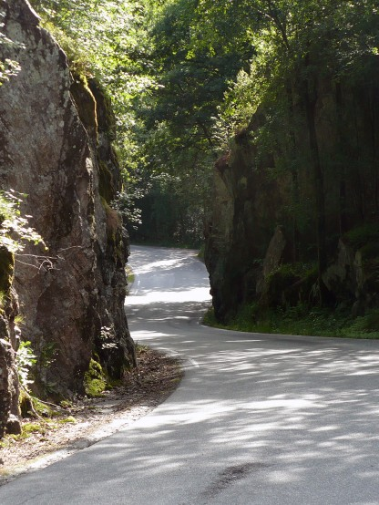
В первый день следования по этому маршруту было очень интересно. Погода радовала, а виды по сторонам еще больше.
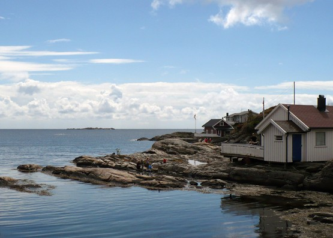
Первое что бросилось в глаза это обилие ягод, причем самых разных. Удивительно они все поспели одновременно, наверное, специально к нашему приезду. Больше всего малины, есть черника, земляника, ежевика, костеника, вишня, красная смородина. Я никогда не видел столько ягод одновременно.
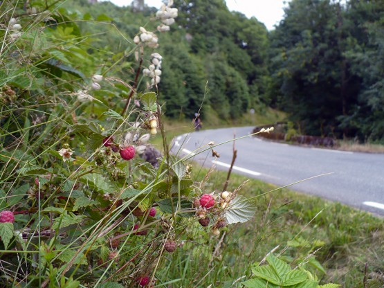
Тем, кто говорит, что Норвегия велосипедная страна я должен ответственно заявить - они не правы. Ехать мимо всех этих ягод нельзя в принципе. Приходится собирать всю волю в кулак, но это не слишком получается. Малина такая спелая, что сама отрывается от ветки:
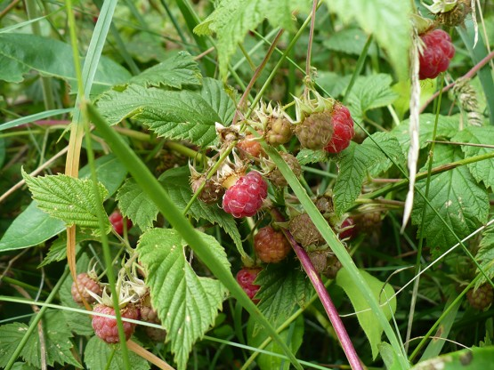
Я уже не говорю о видах. Останавливаться можно постоянно, только поехал, стоп, фото, стоп ягоды, стоп фото. . . Это просто невыносимо. Норвегия страна антивелосипедная! Вот такой темп, назовем его норвежским, станет нашим на все оставшиеся дни. Но пропустить все эти красоты и вкусности мы точно не могли. Впереди был большой город и мы решили остановиться до него. Привычка прятать палатки как можно дальше от человеческих глаз сыграла с нами злую шутку. Мы залезли в густую траву на лесной поляне и там под кронами огромных деревьев поставили палатку. Нам казалось, что мы отлично спрятались от всех врагов, наивные. . .
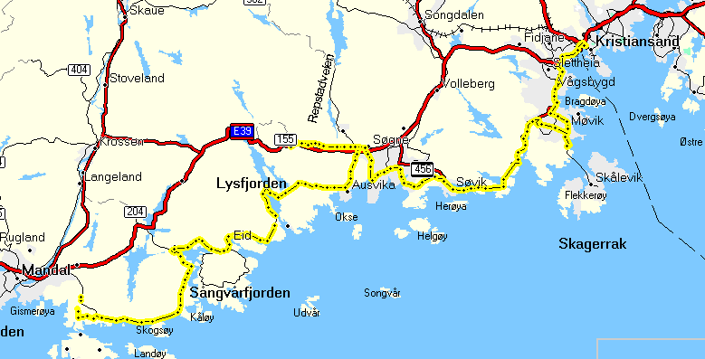
За день проехали 61 километр. Трек этого дня Трек 2008-07-13.gdb
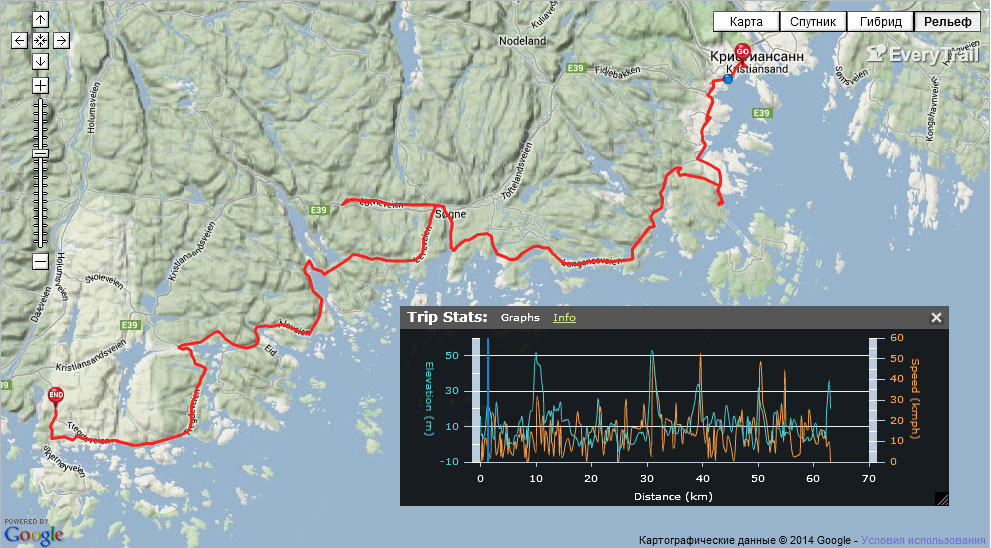
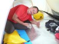 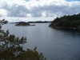 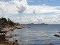 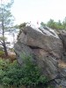 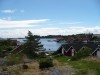 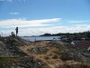 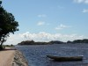 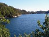 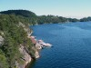 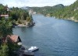 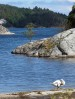 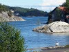 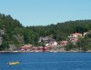 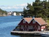 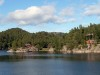 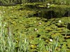 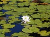 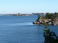 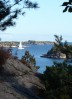